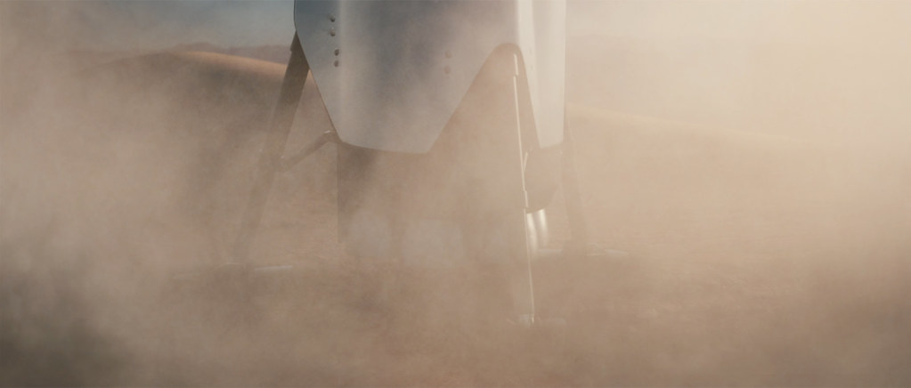
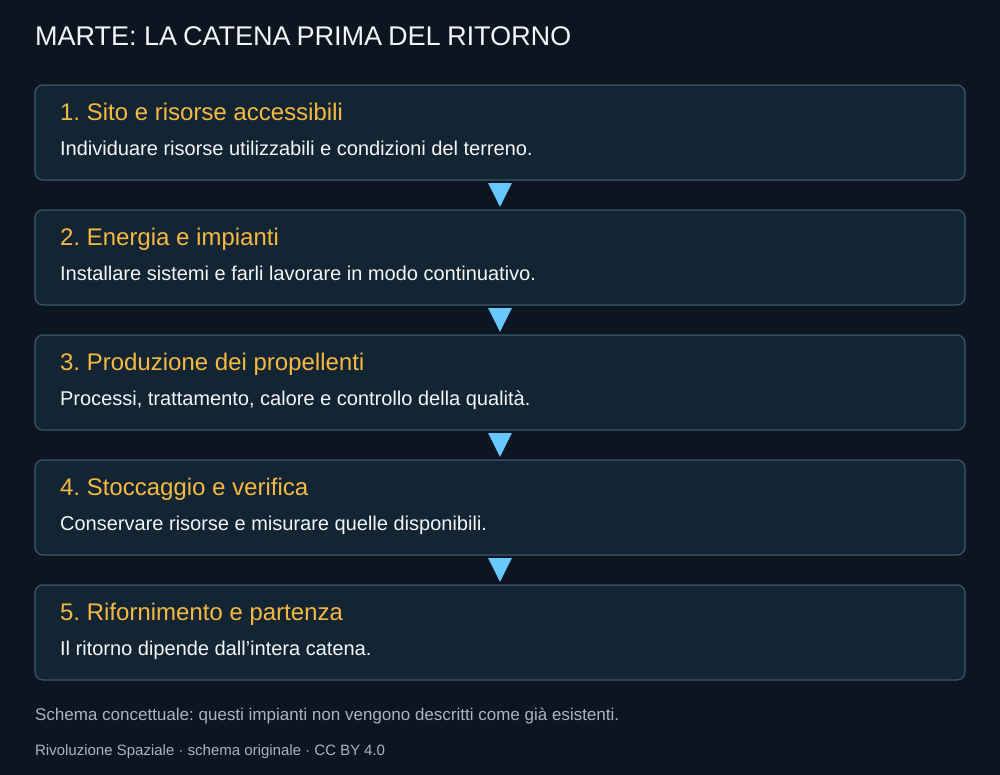

Marte è l’origine dell’aspirazione, ma arrivarci non conclude il problema. Una nave capace di raggiungere il pianeta deve ancora atterrare, mantenere funzionanti carico e impianti e contribuire a un sistema che consenta di vivere o ripartire. Il trasporto è necessario; non è la colonia.

.jpg){kind=link}
Un’atmosfera che aiuta e non basta
Marte ha un’atmosfera sottile, diversa da quella terrestre. Può contribuire alla frenata, ma non offre le stesse condizioni di portanza e dissipazione. La gravità è inferiore, mentre il terreno, la polvere e l’ambiente termico pongono altri vincoli. Un atterraggio di una nave grande richiede una soluzione coerente con questa combinazione.
La massa utile non è soltanto il carico che entra nella stiva. È ciò che arriva utilizzabile, può essere scaricato e continua a funzionare. Una macchina industriale bloccata dentro il veicolo, senza energia o senza la possibilità di ripararla, non costruisce una base.
Prima delle persone, gli impianti
Le prime missioni cargo possono cercare un sito, portare energia e dimostrare operazioni. Se il programma immagina produzione locale dei propellenti, occorre trovare risorse accessibili, estrarle e trattarle. La presenza di acqua in una regione non dimostra che un impianto possa usarla alla quantità e con la continuità necessarie.

Metano e ossigeno non compaiono da soli
Una produzione locale deve separare processi e materie prime. La reazione di Sabatier combina anidride carbonica e idrogeno per ottenere metano e acqua; l’elettrolisi può contribuire alla produzione di ossigeno e idrogeno. L’energia, la gestione del calore e il trattamento delle risorse determinano quanto propellente possa essere prodotto davvero.
MOXIE, su Perseverance, ha dimostrato la produzione sperimentale di ossigeno dall’atmosfera marziana. NASA ne ha documentato il completamento nel 2023. Non era una fabbrica di metano, non alimentava una nave per il ritorno e non certificava una produzione industriale continua. Il precedente è importante proprio se viene descritto alla sua scala.
Il viaggio umano aggiunge problemi diversi
Le persone richiedono acqua, cibo, assistenza, protezione e sistemi capaci di operare lontano dalla Terra. Un guasto non può essere affrontato contando sull’arrivo rapido di un tecnico. Il tempo di comunicazione impedisce anche di trattare ogni decisione come un comando immediato da terra.
Il rischio medico e quello psicologico non sono accessori del progetto. Una nave grande permette di progettare spazi migliori, ma non rende automaticamente accettabile una permanenza lunga. La destinazione deve poter sostenere l’equipaggio anche quando una parte del piano non funziona.
Un ritorno da preparare prima di partire
La scelta più delicata è quanto affidare alla produzione locale prima di mandare persone. Se il ritorno dipende da un impianto non dimostrato, la missione deve avere una strategia per il suo eventuale ritardo o guasto. La verifica di risorse e capacità produttiva dovrebbe precedere l’uso umano di quelle risorse.
L’aspirazione marziana conserva valore come direzione del lavoro. Le date-obiettivo devono restare obiettivi, non appuntamenti garantiti. La storia di Red Dragon e ITS mostra quante forme possa assumere una strada verso la stessa destinazione. Starship è la forma più concreta oggi, ma dovrà misurarsi anche con problemi che non si risolvono aumentando la spinta.
Fonti pubbliche e tracce
- NASA Science, Mars Facts. Ambiente marziano e differenze dalla Terra.
- NASA, MOXIE completa la dimostrazione su Marte. Produzione sperimentale di ossigeno; non fabbrica di metano né impianto per un ritorno umano.
- SpaceX, presentazione IAC 2016. Presentazione storica del progetto ITS, non stato attuale.